♻️
Proper Waste Management
Encourage students to separate recyclable, biodegradable, and residual waste.
ECO • FIGHTERS
Welcome to EcoSphere, the eco-friendly initiative of Pamantasan ng Cabuyao (PNC), dedicated to building a greener, more sustainable campus by bringing together students, faculty, and staff to promote sustainable habits like waste segregation and energy conservation, inspiring every Cabuyaeño to help protect our environment one green step at a time.
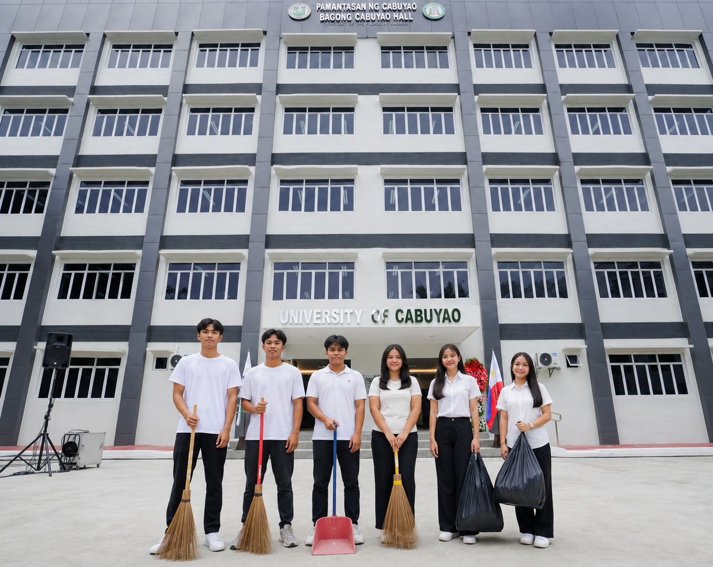
ABOUT ECOSPHERE
EcoSphere focuses on environmental responsibility within our school campus. Our goal is to identify simple actions that can make the university cleaner and more sustainable.
Every student can contribute through proper waste segregation, saving electricity and water, caring for plants, and participating in environmental activities.
To develop a school community where environmental responsibility becomes part of everyday student life.
OUR UNIVERSITY
Encourage students to separate recyclable, biodegradable, and residual waste.
Turn off lights, fans, computers, and other electrical equipment when they are not being used.
Avoid unnecessary water consumption and immediately report leaking faucets around campus.
Protect school plants, gardens, trees, and other natural areas within the campus.
01 • WASTE
Waste management is one of the easiest ways students can help improve the school environment.
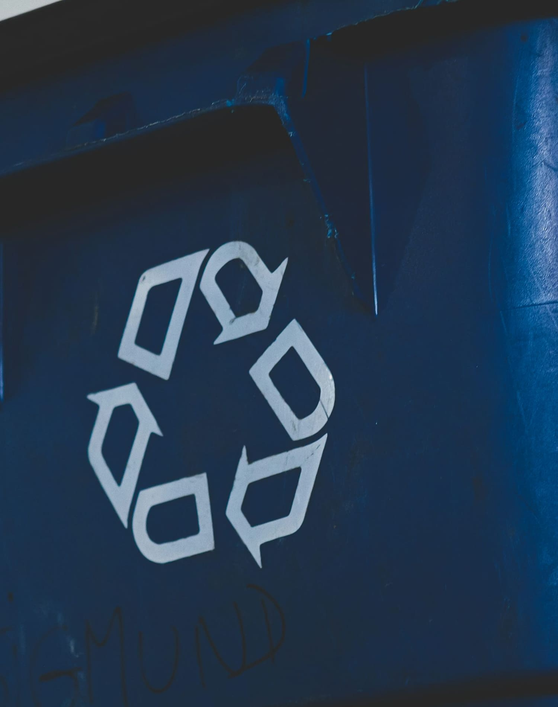
02 • ENERGY
Switch off classroom lights when natural lighting is enough or when the room is empty.
Turn off cooling equipment when classrooms are unoccupied.
Shut down computers and monitors after laboratory activities.
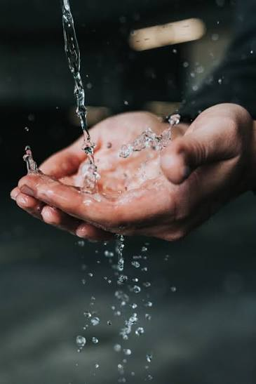
03 • WATER
Students can help conserve water by using only what they need and keeping school facilities free from water waste.
Always close faucets properly after use and report leaks to school personnel.
04 • GREEN SPACES
School gardens can provide students with a space to learn about plants, biodiversity, and responsibility.
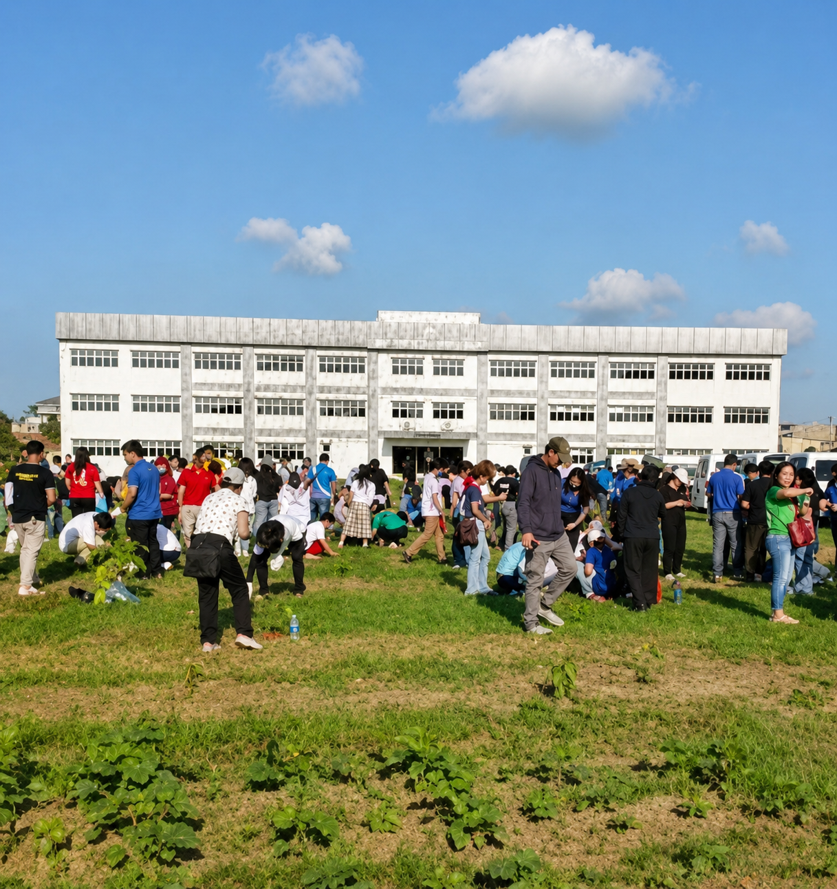
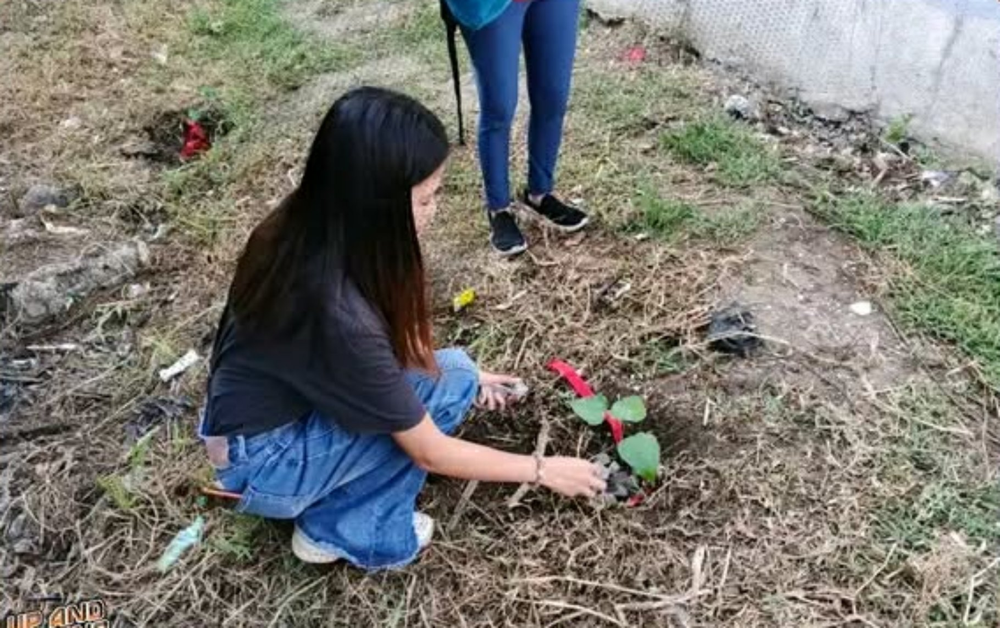
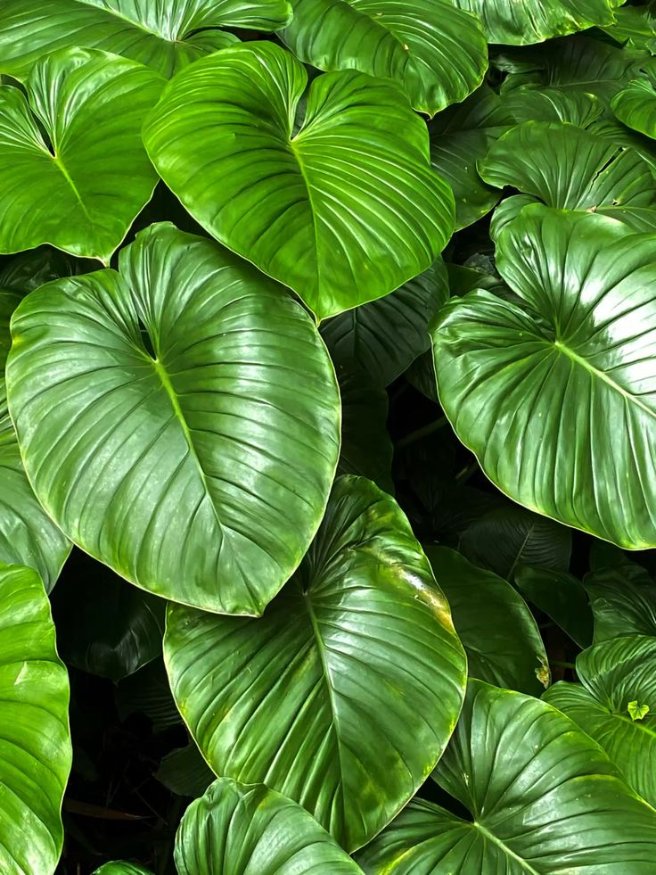
05 • TRANSPORTATION
Walking short distances reduces vehicle emissions and promotes an active lifestyle.
Bicycles provide a low-emission way to travel when it is safe and practical.
Sharing rides can reduce the number of vehicles traveling to school.
STUDENT ECO GUIDE
Reduce disposable plastic bottles by bringing your own reusable container.
Put your waste into the appropriate school bin.
Turn off lights and equipment before leaving an empty classroom.
Do not damage plants and help maintain school green spaces.
Participate in clean-ups, planting activities, and environmental campaigns.
06 • SCHOOL ACTIVITIES
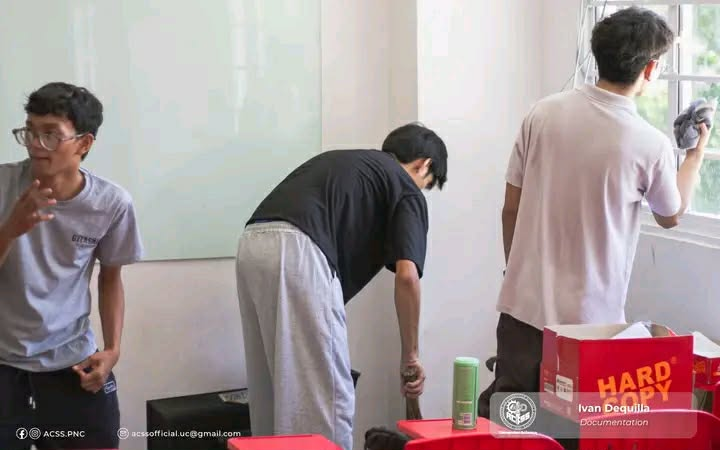
Students work together to maintain clean classrooms, hallways, and outdoor areas.
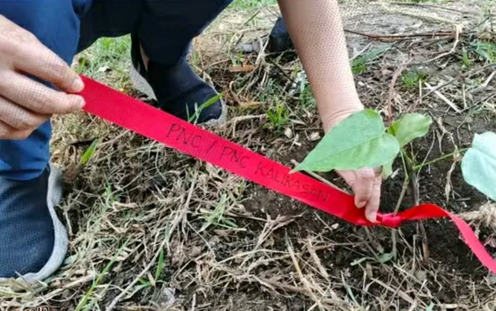
Students help grow and care for plants around the school campus.
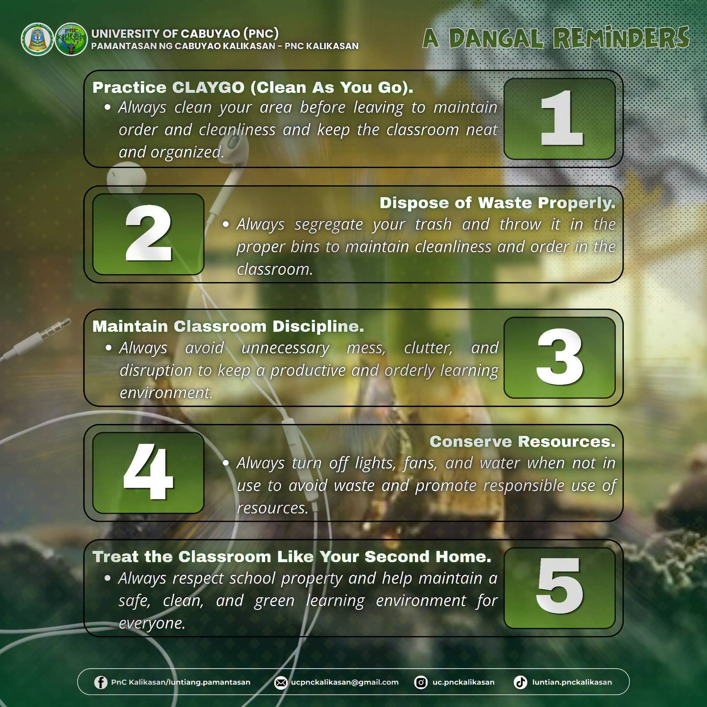
Students share environmental tips through posters, presentations, and school events.
07 • ECO PROJECTS
Create clearly labeled collection areas for recyclable materials.
Develop a student-maintained garden using sustainable gardening practices.
Promote responsible water use throughout school facilities.
Student volunteers can remind classrooms to switch off unused equipment.
08 • GALLERY
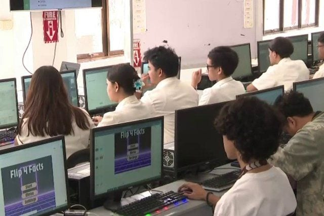
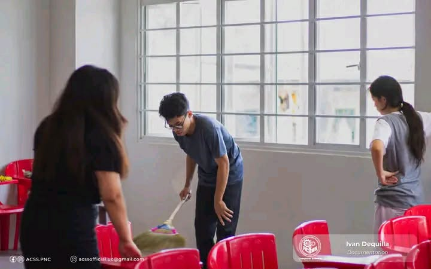
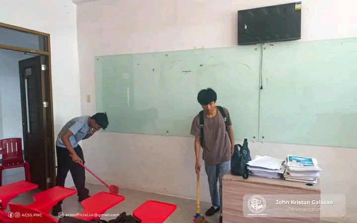
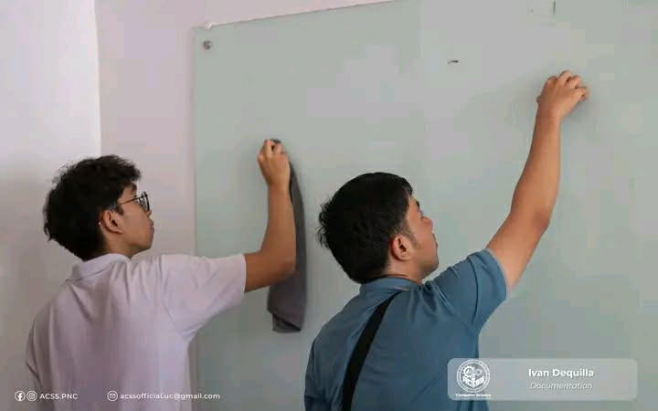
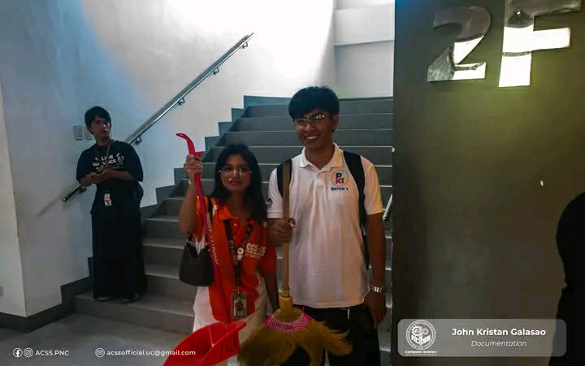
START SMALL. MAKE A DIFFERENCE.
A greener school does not happen through one person. It happens when everyone participates.
Join EcoSphere09 • GET INVOLVED
Students can coordinate with the school's environmental organization, student council, or assigned faculty coordinator.
EcoSphere School Initiative
📍 Pamantasan ng Cabuyao
📧 ecosphere@school.edu
🌱 EcoSphere Organization